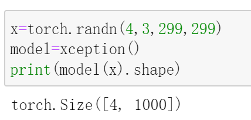

Xception
Xception将Inception中的Inception模块替换为深度可分离卷积。在几乎不增加参数量的前提下，Xception在一些图像分类任务中的表现超越了Inception V3。
我们之前介绍的深度可分离卷积是先做逐通道卷积，再做逐点卷积，而在Xception的论文描述中，这两步的顺序正好相反（见下图）。不过没关系，论文中也指出，这里的顺序并不影响效果（理由：in particular because these operations are meant to be used in a stacked setting.）。

同时，经过实验发现，深度可分离卷积中的卷积层之间不加非线性激活函数的效果相较于加入非线性激活函数来说会更好一些。
Xception的网络结构如下：
网络总共可以分为3个部分：Entry flow，Middle flow，以及Exit flow，并且借鉴了ResNet的思想，引入了跳连(skip connection)。注意每个卷积（包括普通卷积与深度可分离卷积）之后都做了批归一化操作，只是没在网络结构图中画出。
PyTorch 实现Xception
现在，根据上面的网络结构图，来实现Xception。
观察网络结构图，发现SeparableConv，也就是深度可分离卷积被重复使用，因此先来实现它：
1 | #深度可分离卷积 |
上面的代码很简单，就是之前提到的逐通道卷积和逐点卷积的堆叠。
现在来实现Xception：
1 | class Xception(nn.Module): |
上述代码分别实现了Entry flow，Middle flow，以及Exit flow。
代码中的Block模块，可以看作是一个深度可分离卷积堆叠模块，它包括(ReLu，SeparableConv，ReLU，SeparableConv，MaxPooling)。当然，有些层并不完全包含其中，再看这张网络结构图就能明白：
具体细节在Block的代码实现中进行了控制。
对于Entry flow，首先使用了两个3x3卷积（conv1，conv2）降低特征图尺寸，同时增加了特征图个数；接着是3个含跳连的深度可分离卷积堆叠模块。
对于Middle flow，包含了8个一模一样的含跳连的深度可分离卷积堆叠模块。
对于Exit flow，首先是一个含跳连的深度可分离卷积堆叠模块，接着是一些深度可分离卷积层以及全局平均池化层，最后用全连接层输出分类结果。
实现了网络总体结构之后，现在来完成其中Block（深度可分离卷积堆叠模块）代码的编写。
1 | class Block(nn.Module): |
Block中的参数：in_filters：输入特征图个数
out_filters：输出特征图个数
reps：重复’ReLU-SeparableConv-BN’的次数（注意网络结构图中没有画出BN）
stride：卷积/池化步长
start_with_relu：是否Block的第一层是ReLU
grow_first：是否先改变（增大）通道数再堆叠重复的’ReLU-SeparableConv-BN’
Block中的卷积层不会改变特征图尺寸，特征图尺寸的改变是通过最大池化操作完成的。
其中的start_with_relu参数针对的是Entry flow，因为其中有一个实例化的Block的结构为（SeparableConv，ReLU，SeparableConv，MaxPooling），不包含ReLu，因此这个Block对应的start_with_relu=False，而其余实例化的Block都以ReLU开始，因此它们的start_with_relu都是True。
现在，考虑何时需要对跳连操作前的输入施加变换。
和ResNet的思想一样，如果经过映射后的特征图尺寸和通道数没有改变，就可以直接做跳连，否则需要先对输入做变换，之后再做跳连。
具体地，Middle flow中的Block通道数不变(in_channels=out_channels)，且特征图尺寸也不变(stride=1)，因此无需对输入做变换，可直接做跳连。而其余的Block中不满足这两个条件中的任意一个，因此在做跳连之前需要对输入做些变换。
那做什么变换呢？
前面说过，Block中的卷积层不会改变特征图尺寸，特征图尺寸的改变是通过最大池化操作完成的，并且做的是尺寸减半操作。所以，要变的只有两个地方：
1) 通道数：通过改变输出特征图个数实现
2) 特征图尺寸：通过令卷积层的stride=2来实现与最大池化操作同样的效果，即：特征图尺寸减半。
以上便是Xception的代码及实现过程分析。
现在来测试一下：

最后，给出Xception的网络结构：
1 | Xception( |